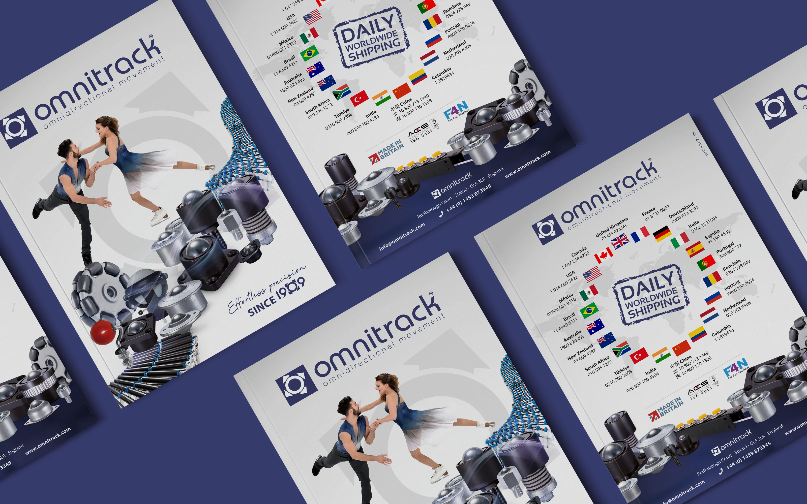
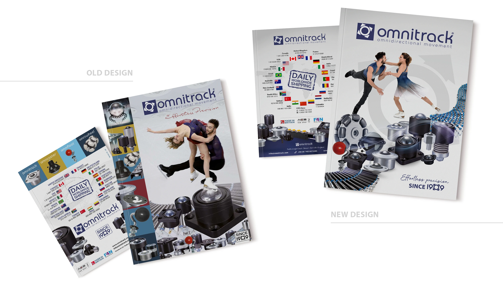
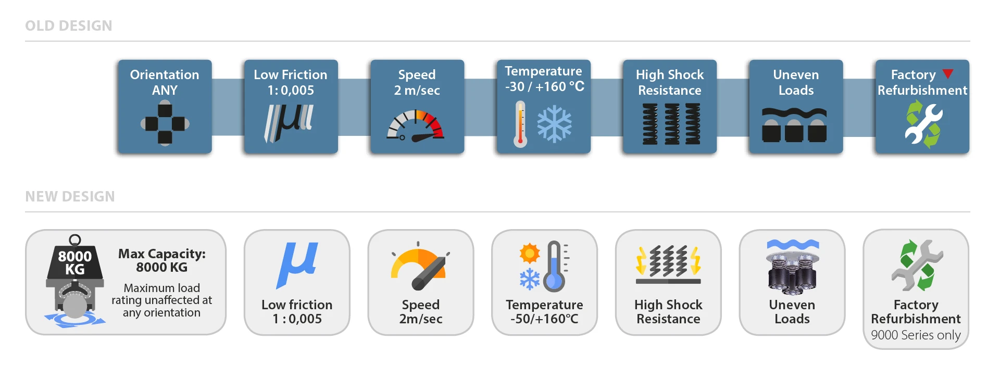
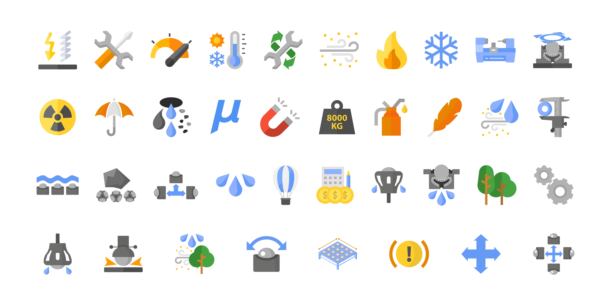
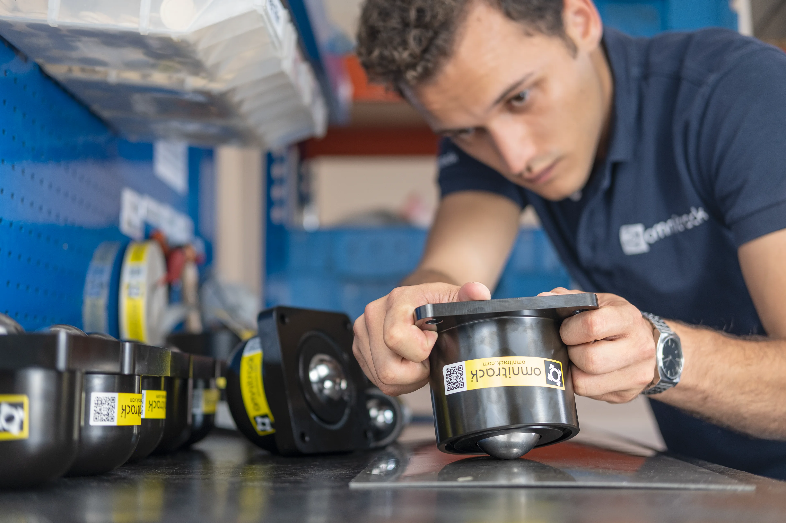
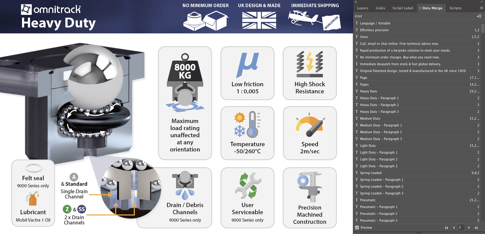
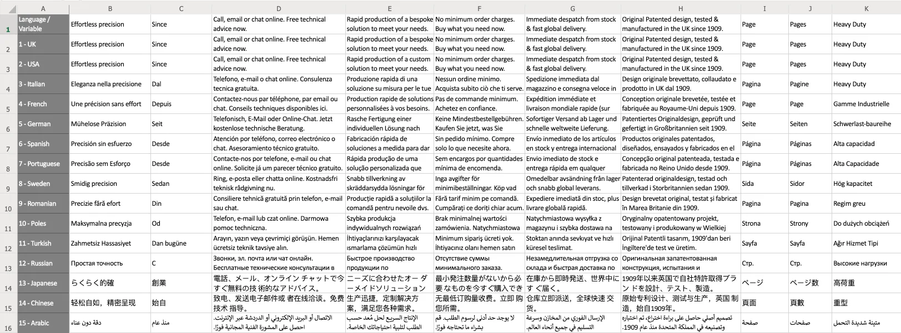
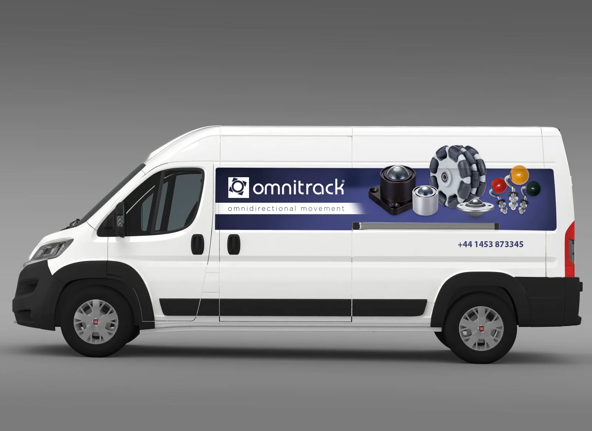
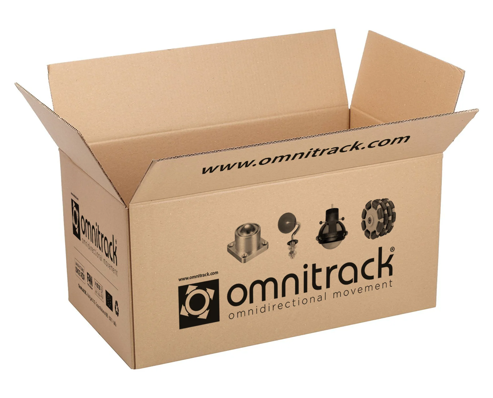
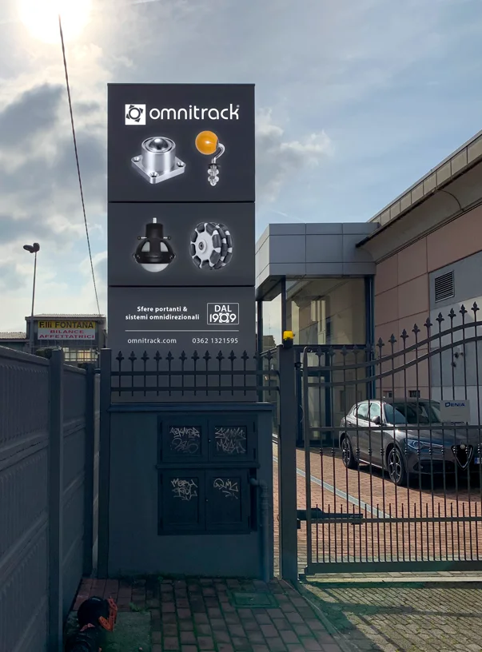

Overview
This project was an update and redesign of Omnitrack's product catalogue. Omnitrack manufactures industrial bearings for light and heavy loads across countless applications, with clients including NASA, Rolls-Royce, and some airlines.
The new catalogue has 32 pages, 8 of them entirely new. The catalogue is published on the company's website at omnitrack.com/pdf-catalogue.

Limitations
The content was dense and full of minimal technical detail I needed to preserve carefully — the main challenge was making the pages feel cleaner and lighter without removing or changing any information.
I couldn't edit the text itself, since the catalogue was printed in 14 languages and re-translating everything would have been costly, so I was asked to keep the copy exactly as it was. I was also asked not to add extra pages, which made it harder to fit everything with good legibility without the layout feeling too condensed.

Result
I redesigned every page's layout, keeping the same information but giving it more breathing room, and diagrammed the 8 new pages from scratch — including the Omniwheel range, plastic castors, spring-loaded units, ball transfer rails and skates, and a page on the company's history since 1909.
Technical drawings
Every technical drawing was redesigned in a new flat style, avoiding strokes and gradients to keep them clean and easy to understand — some needed correcting against the real products, others were brand-new products I diagrammed from scratch. In total there are 40 drawings, 6 or more of them entirely new.
Tables & charts
I created a new style for every table and chart, using light colours instead of heavy lines to help guide the data. A lot of the information had also been updated, so I checked it carefully several times.
Icons
The old catalogue's icons had no defined style or colour pattern, so I redesigned them too — adapting some from existing icon sets and creating others from scratch based on the company's products. In total there are more than 40 icons, in a flat style consistent with the technical drawings.


Product photos
I reused many photos from the previous catalogue, but some new products needed brand-new photography, which I shot and edited in Adobe Photoshop — cutting backgrounds, correcting colours, and sometimes changing elements in the photo. All the steel spheres, for instance, were replaced to keep a consistent visual across products.
Sometimes I needed a photo of a product we didn't have on hand — like the tables below — so I manipulated existing images to create a convincing preview for the catalogue.

Translation
The catalogue was produced in 14 languages — too large a job to copy and paste more than 2,000 terms by hand, so I used the Data Merge function in Adobe InDesign instead.

I built a spreadsheet with every term from the old catalogue, gave each one a variable name, and applied it throughout the InDesign layout. I then converted the spreadsheet to CSV and imported it as the Data Merge source, adjusting text box sizes afterwards since some languages needed more space than others for the same text.

Additional materials
Beyond the catalogue itself, I was asked to design a business card, letterhead, van livery, cardboard box, warranty card, email footer, entrance totem, and the company website.








Conclusion
This was a challenging project — I'd never worked with this kind of product before, so I had to learn a technically detailed, unfamiliar range from scratch. It was also my first work opportunity abroad, and I struggled a little at first with the different language and culture. In the end, I was happy with both the result and my own professional and personal growth.
I'm from Brazil, and this project gave me the chance to work in two different countries: two months in a striking building in Stroud, England, and one month in Milan and Cesano Maderno, Italy — an experience I still carry into every project since.